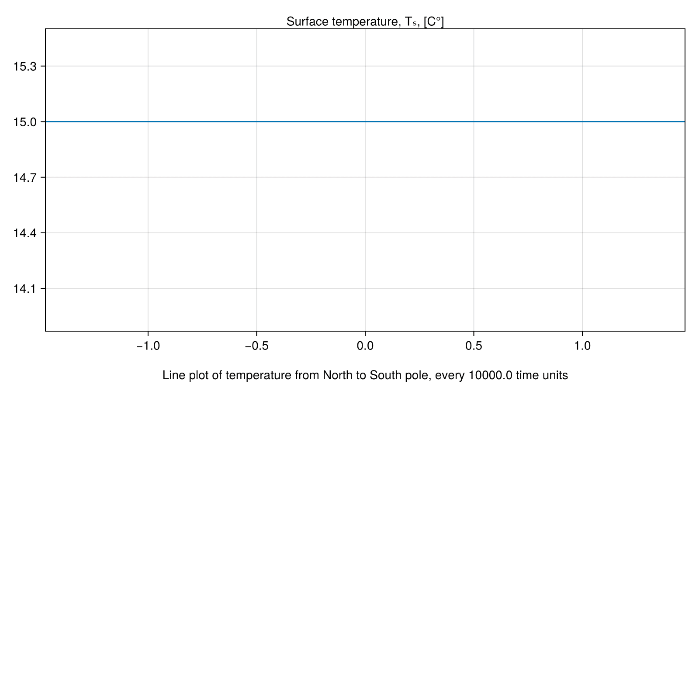
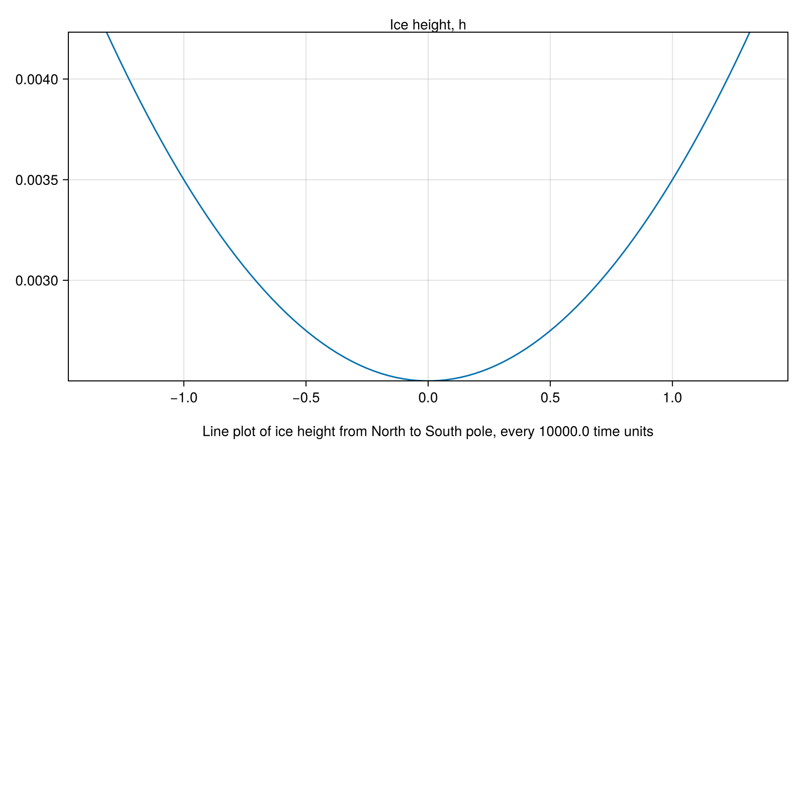

Budko-Sellers-Halfar
In this example, we will compose the Budyko-Sellers 1D energy balance model of the Earth's surface temperature with the Halfar model of glacial dynamics. Note that each of these components models is itself a composition of smaller physical models. In this walkthrough, we will compose them together using the same techniques.
# AlgebraicJulia Dependencies
using Catlab
using Catlab.Graphics
using CombinatorialSpaces
using DiagrammaticEquations
using DiagrammaticEquations.Deca
using Decapodes
# External Dependencies
using MLStyle
using ComponentArrays
using LinearAlgebra
using OrdinaryDiffEq
using JLD2
using CairoMakie
using GeometryBasics: Point2
Point2D = Point2{Float64};Point2{Float64} (alias for Point{2, Float64})We defined the Budyko-Sellers and Halfar models in example scripts (soon to be turned into Docs pages) in the examples/climate folder of the main repository. We recall them here.
budyko_sellers = apex(budyko_sellers_cospan)
halfar = apex(ice_dynamics_cospan)trueBudyko-Sellers
to_graphviz(budyko_sellers)Halfar
to_graphviz(halfar)Warming
This is a formula that computes A for use in the Halfar glacial dynamics, given T from the Budyko-Sellers model.
# Tₛ(ϕ,t) := Surface temperature
# A(ϕ) := Longwave emissions at 0°C
warming = @decapode begin
(Tₛ)::Form0
(A)::Form1
A == avg₀₁(5.8282*10^(-0.236 * Tₛ)*1.65e7)
end
to_graphviz(warming)Composition
Observe that this composition technique is the same as that used in composing each of the Budyko-Sellers and Halfar models.
budyko_sellers_halfar_composition_diagram = @relation () begin
budyko_sellers(Tₛ)
warming(A, Tₛ)
halfar(A)
end
to_graphviz(budyko_sellers_halfar_composition_diagram, box_labels=:name, junction_labels=:variable, prog="circo")
-->
<!-- Title: G Pages: 1 -->
<svg width="587pt" height="44pt"
viewBox="0.00 0.00 587.38 44.00" xmlns="http://www.w3.org/2000/svg" xmlns:xlink="http://www.w3.org/1999/xlink">
<g id="graph0" class="graph" transform="scale(1 1) rotate(0) translate(4 40)">
<title>G</title>
<polygon fill="%23ffffff" stroke="transparent" points="-4,4 -4,-40 583.3809,-40 583.3809,4 -4,4"/>
<!-- n1 -->
<g id="box1" class="node">
<title>n1</title>
<ellipse fill="none" stroke="%23000000" cx="68.2849" cy="-18" rx="68.0705" ry="18"/>
<text text-anchor="middle" x="68.2849" y="-14.3" font-family="Serif" font-size="14.00" fill="%23000000">budyko_sellers</text>
</g>
<!-- n4 -->
<!-- junction -->
<g id="junction1" class="node">
<title>n4</title>
<ellipse fill="%23000000" stroke="%23000000" cx="211.0698" cy="-18" rx="2.5" ry="2.5"/>
<text text-anchor="middle" x="201.0698" y="-24.3" font-family="Serif" font-size="14.00" fill="%23000000">Tₛ</text>
</g>
<!-- n1&%2345;&%2345;n4 -->
<g id="edge1" class="edge">
<title>n1&%2345;&%2345;n4</title>
<path fill="none" stroke="%23000000" d="M136.7499,-18C167.669,-18 199.3215,-18 208.458,-18"/>
</g>
<!-- n2 -->
<g id="box2" class="node">
<title>n2</title>
<ellipse fill="none" stroke="%23000000" cx="327.9535" cy="-18" rx="42.2678" ry="18"/>
<text text-anchor="middle" x="327.9535" y="-14.3" font-family="Serif" font-size="14.00" fill="%23000000">warming</text>
</g>
<!-- n2&%2345;&%2345;n4 -->
<g id="edge2" class="edge">
<title>n2&%2345;&%2345;n4</title>
<path fill="none" stroke="%23000000" d="M285.4252,-18C256.966,-18 223.0569,-18 213.6172,-18"/>
</g>
<!-- n5 -->
<!-- junction -->
<g id="junction2" class="node">
<title>n5</title>
<ellipse fill="%23000000" stroke="%23000000" cx="444.8373" cy="-18" rx="2.5" ry="2.5"/>
<text text-anchor="middle" x="436.8373" y="-24.3" font-family="Serif" font-size="14.00" fill="%23000000">A</text>
</g>
<!-- n2&%2345;&%2345;n5 -->
<g id="edge3" class="edge">
<title>n2&%2345;&%2345;n5</title>
<path fill="none" stroke="%23000000" d="M370.4819,-18C398.9411,-18 432.8502,-18 442.2899,-18"/>
</g>
<!-- n3 -->
<g id="box3" class="node">
<title>n3</title>
<ellipse fill="none" stroke="%23000000" cx="549.3591" cy="-18" rx="30.0436" ry="18"/>
<text text-anchor="middle" x="549.3591" y="-14.3" font-family="Serif" font-size="14.00" fill="%23000000">halfar</text>
</g>
<!-- n3&%2345;&%2345;n5 -->
<g id="edge4" class="edge">
<title>n3&%2345;&%2345;n5</title>
<path fill="none" stroke="%23000000" d="M519.127,-18C492.8399,-18 457.4512,-18 447.5243,-18"/>
</g>
</g>
</svg>
)
We apply a composition by plugging in a Decapode for each component. We also specify the internal name of the variables to be used in combining.
budyko_sellers_halfar_cospan = oapply(budyko_sellers_halfar_composition_diagram,
[Open(budyko_sellers, [:Tₛ]),
Open(warming, [:A, :Tₛ]),
Open(halfar, [:stress_A])])
budyko_sellers_halfar = apex(budyko_sellers_halfar_cospan)
to_graphviz(budyko_sellers_halfar)We can perform type inference to determine what kind of differential form each of our variables are.
budyko_sellers_halfar = expand_operators(budyko_sellers_halfar)
infer_types!(budyko_sellers_halfar, op1_inf_rules_1D, op2_inf_rules_1D)
resolve_overloads!(budyko_sellers_halfar, op1_res_rules_1D, op2_res_rules_1D)
to_graphviz(budyko_sellers_halfar)Defining the mesh
These dynamics will occur on a 1-D manifold (a line). Points near +-π/2 will represent points near the North/ South poles. Points near 0 represent those at the equator.
s′ = EmbeddedDeltaSet1D{Bool, Point2D}()
#add_vertices!(s′, 30, point=Point2D.(range(-π/2 + π/32, π/2 - π/32, length=30), 0))
add_vertices!(s′, 100, point=Point2D.(range(-π/2 + π/32, π/2 - π/32, length=100), 0))
add_edges!(s′, 1:nv(s′)-1, 2:nv(s′))
orient!(s′)
s = EmbeddedDeltaDualComplex1D{Bool, Float64, Point2D}(s′)
subdivide_duals!(s, Circumcenter())Define input data
We need to supply initial conditions to our model. We create synthetic data here, although one may imagine that they could source this from their data repo of choice.
# This is a primal 0-form, with values at vertices.
cosϕᵖ = map(x -> cos(x[1]), point(s′))
# This is a dual 0-form, with values at edge centers.
cosϕᵈ = map(edges(s′)) do e
(cos(point(s′, src(s′, e))[1]) + cos(point(s′, tgt(s′, e))[1])) / 2
end
α₀ = 0.354
α₂ = 0.25
α = map(point(s′)) do ϕ
α₀ + α₂*((1/2)*(3*ϕ[1]^2 - 1))
end
A = 210
B = 2
f = 0.70
ρ = 1025
cw = 4186
H = 70
C = map(point(s′)) do ϕ
f * ρ * cw * H
end
D = 0.6
# Isothermal initial conditions:
Tₛ₀ = map(point(s′)) do ϕ
15
end
# Visualize initial condition for temperature.
lines(map(x -> x[1], point(s′)), Tₛ₀)n = 3
ρ = 910
g = 9.8
# Ice height is a primal 0-form, with values at vertices.
h₀ = map(point(s′)) do (x,_)
(((x)^2)+2.5) / 1e3
end
# Visualize initial condition for ice sheet height.
lines(map(x -> x[1], point(s′)), h₀)# Store these values to be passed to the solver.
u₀ = ComponentArray(Tₛ=Tₛ₀,halfar_h=h₀)
constants_and_parameters = (
budyko_sellers_absorbed_radiation_α = α,
budyko_sellers_outgoing_radiation_A = A,
budyko_sellers_outgoing_radiation_B = B,
budyko_sellers_energy_C = C,
budyko_sellers_diffusion_D = D,
budyko_sellers_cosϕᵖ = cosϕᵖ,
budyko_sellers_diffusion_cosϕᵈ = cosϕᵈ,
halfar_n = n,
halfar_stress_ρ = ρ,
halfar_stress_g = g)(budyko_sellers_absorbed_radiation_α = [1.042230343107338, 1.0097044483518975, 0.9778423473669757, 0.9466440401525731, 0.9161095267086897, 0.8862388070353256, 0.8570318811324809, 0.828488749000155, 0.8006094106383485, 0.7733938660470613 … 0.7733938660470613, 0.8006094106383485, 0.828488749000155, 0.8570318811324809, 0.8862388070353256, 0.9161095267086897, 0.9466440401525731, 0.9778423473669757, 1.0097044483518975, 1.042230343107338], budyko_sellers_outgoing_radiation_A = 210, budyko_sellers_outgoing_radiation_B = 2, budyko_sellers_energy_C = [2.1024185e8, 2.1024185e8, 2.1024185e8, 2.1024185e8, 2.1024185e8, 2.1024185e8, 2.1024185e8, 2.1024185e8, 2.1024185e8, 2.1024185e8 … 2.1024185e8, 2.1024185e8, 2.1024185e8, 2.1024185e8, 2.1024185e8, 2.1024185e8, 2.1024185e8, 2.1024185e8, 2.1024185e8, 2.1024185e8], budyko_sellers_diffusion_D = 0.6, budyko_sellers_cosϕᵖ = [0.09801714032956077, 0.12757607738957208, 0.15702211050324905, 0.18632918013489802, 0.21547134973054533, 0.24442282867160953, 0.2731579950994198, 0.30165141859038386, 0.32987788266173657, 0.35781240708795353 … 0.35781240708795353, 0.32987788266173657, 0.30165141859038386, 0.2731579950994198, 0.24442282867160953, 0.21547134973054533, 0.18632918013489802, 0.15702211050324905, 0.12757607738957208, 0.09801714032956077], budyko_sellers_diffusion_cosϕᵈ = [0.11279660885956642, 0.14229909394641055, 0.17167564531907353, 0.20090026493272167, 0.22994708920107743, 0.25879041188551466, 0.2874047068449018, 0.3157646506260602, 0.3438451448748451, 0.37162133854801555 … 0.37162133854801555, 0.3438451448748451, 0.3157646506260602, 0.2874047068449018, 0.25879041188551466, 0.22994708920107743, 0.20090026493272167, 0.17167564531907353, 0.14229909394641055, 0.11279660885956642], halfar_n = 3, halfar_stress_ρ = 910, halfar_stress_g = 9.8)Symbols to functions
The symbols along edges in our Decapode must be mapped to executable functions. In the Discrete Exterior Calculus, all our operators are defined as relations bewteen points, lines, and triangles on meshes known as simplicial sets. Thus, DEC operators are re-usable across any simplicial set.
function generate(sd, my_symbol; hodge=GeometricHodge())
op = @match my_symbol begin
:♯ => x -> begin
# This is an implementation of the "sharp" operator from the exterior
# calculus, which takes co-vector fields to vector fields.
# This could be up-streamed to the CombinatorialSpaces.jl library. (i.e.
# this operation is not bespoke to this simulation.)
e_vecs = map(edges(sd)) do e
point(sd, sd[e, :∂v0]) - point(sd, sd[e, :∂v1])
end
neighbors = map(vertices(sd)) do v
union(incident(sd, v, :∂v0), incident(sd, v, :∂v1))
end
n_vecs = map(neighbors) do es
[e_vecs[e] for e in es]
end
map(neighbors, n_vecs) do es, nvs
sum([nv*norm(nv)*x[e] for (e,nv) in zip(es,nvs)]) / sum(norm.(nvs))
end
end
:mag => x -> begin
norm.(x)
end
:avg₀₁ => x -> begin
I = Vector{Int64}()
J = Vector{Int64}()
V = Vector{Float64}()
for e in 1:ne(s)
append!(J, [s[e,:∂v0],s[e,:∂v1]])
append!(I, [e,e])
append!(V, [0.5, 0.5])
end
avg_mat = sparse(I,J,V)
avg_mat * x
end
:^ => (x,y) -> x .^ y
:* => (x,y) -> x .* y
:show => x -> begin
@show x
x
end
x => error("Unmatched operator $my_symbol")
end
return (args...) -> op(args...)
endgenerate (generic function with 1 method)Simulation generation
From our Decapode, we automatically generate a finite difference method solver that performs explicit time-stepping to solve our system of multiphysics equations.
sim = eval(gensim(budyko_sellers_halfar, dimension=1))
fₘ = sim(s, generate)(::Main.var"#f#100"{PreallocationTools.FixedSizeDiffCache{Vector{Float64}, Vector{ForwardDiff.Dual{nothing, Float64, 12}}}, PreallocationTools.FixedSizeDiffCache{Vector{Float64}, Vector{ForwardDiff.Dual{nothing, Float64, 12}}}, PreallocationTools.FixedSizeDiffCache{Vector{Float64}, Vector{ForwardDiff.Dual{nothing, Float64, 12}}}, PreallocationTools.FixedSizeDiffCache{Vector{Float64}, Vector{ForwardDiff.Dual{nothing, Float64, 11}}}, PreallocationTools.FixedSizeDiffCache{Vector{Float64}, Vector{ForwardDiff.Dual{nothing, Float64, 12}}}, PreallocationTools.FixedSizeDiffCache{Vector{Float64}, Vector{ForwardDiff.Dual{nothing, Float64, 12}}}, PreallocationTools.FixedSizeDiffCache{Vector{Float64}, Vector{ForwardDiff.Dual{nothing, Float64, 12}}}, PreallocationTools.FixedSizeDiffCache{Vector{Float64}, Vector{ForwardDiff.Dual{nothing, Float64, 12}}}, PreallocationTools.FixedSizeDiffCache{Vector{Float64}, Vector{ForwardDiff.Dual{nothing, Float64, 12}}}, PreallocationTools.FixedSizeDiffCache{Vector{Float64}, Vector{ForwardDiff.Dual{nothing, Float64, 12}}}, PreallocationTools.FixedSizeDiffCache{Vector{Float64}, Vector{ForwardDiff.Dual{nothing, Float64, 12}}}, PreallocationTools.FixedSizeDiffCache{Vector{Float64}, Vector{ForwardDiff.Dual{nothing, Float64, 12}}}, PreallocationTools.FixedSizeDiffCache{Vector{Float64}, Vector{ForwardDiff.Dual{nothing, Float64, 12}}}, PreallocationTools.FixedSizeDiffCache{Vector{Float64}, Vector{ForwardDiff.Dual{nothing, Float64, 11}}}, PreallocationTools.FixedSizeDiffCache{Vector{Float64}, Vector{ForwardDiff.Dual{nothing, Float64, 12}}}, PreallocationTools.FixedSizeDiffCache{Vector{Float64}, Vector{ForwardDiff.Dual{nothing, Float64, 12}}}, PreallocationTools.FixedSizeDiffCache{Vector{Float64}, Vector{ForwardDiff.Dual{nothing, Float64, 12}}}, PreallocationTools.FixedSizeDiffCache{Vector{Float64}, Vector{ForwardDiff.Dual{nothing, Float64, 12}}}, PreallocationTools.FixedSizeDiffCache{Vector{Float64}, Vector{ForwardDiff.Dual{nothing, Float64, 11}}}, PreallocationTools.FixedSizeDiffCache{Vector{Float64}, Vector{ForwardDiff.Dual{nothing, Float64, 11}}}, PreallocationTools.FixedSizeDiffCache{Vector{Float64}, Vector{ForwardDiff.Dual{nothing, Float64, 11}}}, SparseArrays.SparseMatrixCSC{Float64, Int32}, SparseArrays.SparseMatrixCSC{Float64, Int32}, SparseArrays.SparseMatrixCSC{Float64, Int64}, Main.var"#80#93"{Main.var"#77#90"}, Main.var"#80#93"{Main.var"#75#88"}, Main.var"#80#93"{Main.var"#68#81"{CombinatorialSpaces.DiscreteExteriorCalculus.EmbeddedDeltaDualComplex1D{Bool, Float64, Point2{Float64}}}}, Main.var"#80#93"{Main.var"#76#89"}, SparseArrays.SparseMatrixCSC{Int8, Int32}}) (generic function with 1 method)Run simulation
We wrap our simulator and initial conditions and solve them with the stability-detection and time-stepping methods provided by DifferentialEquations.jl .
tₑ = 1e6
# Julia will pre-compile the generated simulation the first time it is run.
@info("Precompiling Solver")
prob = ODEProblem(fₘ, u₀, (0, 1e-4), constants_and_parameters)
soln = solve(prob, Tsit5())
soln.retcode != :Unstable || error("Solver was not stable")
@info("Solving")
prob = ODEProblem(fₘ, u₀, (0, tₑ), constants_and_parameters)
soln = solve(prob, Tsit5())
@show soln.retcode
@info("Done")[ Info: Precompiling Solver
[ Info: Solving
soln.retcode = SciMLBase.ReturnCode.Success
[ Info: DoneWe can save the solution file to examine later.
@save "budyko_sellers_halfar.jld2" solnVisualize
Quickly examine the final conditions for temperature.
lines(map(x -> x[1], point(s′)), soln(tₑ).Tₛ)Quickly examine the final conditions for ice height.
lines(map(x -> x[1], point(s′)), soln(tₑ).halfar_h)Create animated GIFs of the temperature and ice height dynamics.
begin
# Initial frame
frames = 100
fig = Figure(; size = (800, 800))
ax1 = CairoMakie.Axis(fig[1,1])
xlims!(ax1, extrema(map(x -> x[1], point(s′))))
ylims!(ax1, extrema(soln(tₑ).Tₛ))
Label(fig[1,1,Top()], "Surface temperature, Tₛ, [C°]")
Label(fig[2,1,Top()], "Line plot of temperature from North to South pole, every $(tₑ/frames) time units")
# Animation
record(fig, "budyko_sellers_halfar_T.gif", range(0.0, tₑ; length=frames); framerate = 15) do t
lines!(fig[1,1], map(x -> x[1], point(s′)), soln(t).Tₛ)
end
end
begin
# Initial frame
frames = 100
fig = Figure(; size = (800, 800))
ax1 = CairoMakie.Axis(fig[1,1])
xlims!(ax1, extrema(map(x -> x[1], point(s′))))
ylims!(ax1, extrema(soln(tₑ).halfar_h))
Label(fig[1,1,Top()], "Ice height, h")
Label(fig[2,1,Top()], "Line plot of ice height from North to South pole, every $(tₑ/frames) time units")
# Animation
record(fig, "budyko_sellers_halfar_h.gif", range(0.0, tₑ; length=frames); framerate = 15) do t
lines!(fig[1,1], map(x -> x[1], point(s′)), soln(t).halfar_h)
end
end"budyko_sellers_halfar_h.gif"
